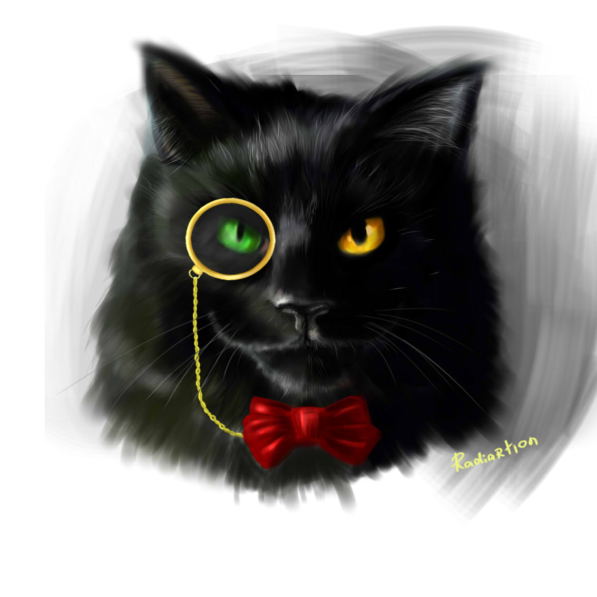

В произведении — две сюжетные линии, каждая из которых развивается самостоятельно. Действие первой разворачивается в Москве в течение нескольких майских дней (дней весеннего полнолуния) в 30-х гг. нашего века, действие же второй происходит тоже в мае, но в городе Ершалаиме (Иерусалиме) почти две тысячи лет тому назад — в самом начале новой эры. Роман построен таким образом, что главы основной сюжетной линии перемежаются главами, составляющими вторую сюжетную линию, причем эти вставные главы являются то главами из романа мастера, то рассказом очевидца событий Воланда.
В один из жарких майских дней в Москве появляется некто Воланд, выдающий себя за специалиста по черной магии, а на самом деле являющийся сатаной. Его сопровождает странная свита: хорошенькая ведьма Гелла, развязный тип Коровьев или фагот, мрачный и зловещий Азазелло и веселый толстяк Бегемот, который по большей части предстает перед читателем в обличье черного кота невероятных размеров.
Первыми встречаются с Воландом на Патриарших прудах редактор толстого художественного журнала Михаил Александрович Берлиоз и поэт Иван Бездомный, написавший антирелигиозную поэму об Иисусе Христе. Воланд вмешивается в их разговор, утверждая, что Христос существовал в действительности. В качестве доказательства того, что есть нечто, неподвластное человеку, Воланд предсказывает Берлиозу страшную смерть под колесами трамвая. На глазах потрясенного Ивана Берлиоз тут же попадает под трамвай, Иван безуспешно пытается преследовать Воланда, а затем, явившись в Массолит (Московская Литературная Ассоциация), так запутанно излагает последовательность событий, что его отвозят в загородную психиатрическую клинику профессора Стравинского, где он и встречает главного героя романа — мастера.
Воланд, явившись в квартиру № 50 дома 302-бис по Садовой улице, которую покойный Берлиоз занимал вместе с директором театра Варьете Степаном Лиходеевым, и найдя последнего в состоянии тяжкого похмелья, предъявляет ему подписанный им же, Лиходеевым, контракт на выступление Воланда в театре, а затем выпроваживает его прочь из квартиры, и Степа непонятным образом оказывается в Ялте.
К Никанору Ивановичу Босому, председателю жилищного товарищества дома № 302-бис, является Коровьев и просит сдать Воланду квартиру № 50, так как Берлиоз погиб, а Лиходеев в Ялте. Никанор Иванович после долгих уговоров соглашается и получает от Коровьева сверх платы, обусловленной договором, 400 рублей, которые прячет в вентиляции. В тот же день к Никанору Ивановичу приходят с ордером на арест за хранение валюты, так как эти рубли превратились в доллары. Ошеломленный Никанор Иванович попадает в ту же клинику профессора Стравинского.
В это время финдиректор Варьете Римский и администратор Варенуха безуспешно пытаются разыскать по телефону исчезнувшего Лиходеева и недоумевают, получая от него одну за другой телеграммы из Ялты с просьбой выслать денег и подтвердить его личность, так как он заброшен в Ялту гипнотизером Воландом. Решив, что это — дурацкая шутка Лиходеева, Римский, собрав телеграммы, посылает Варенуху отнести их "куда надо", однако Варенухе сделать этого не удается: Азазелло и Коровьев, подхватив его под руки, доставляют Варенуху в квартиру № 50, а от поцелуя нагой ведьмы Геллы Варенуха лишается чувств.
Вечером на сцене театра Варьете начинается представление с участием великого мага Воланда и его свиты, фагот выстрелом из пистолета вызывает в театре денежный дождь, и весь зал ловит падающие червонцы. Затем на сцене открывается "дамский магазин", где любая женщина из числа сидящих в зале может бесплатно одеться с ног до головы. Тут же в магазин выстраивается очередь, однако по окончании представления червонцы превращаются в бумажки, а все, приобретенное в "дамском магазине", исчезает без следа, заставив доверчивых женщин метаться по улицам в одном белье.
После спектакля Римский задерживается у себя в кабинете, и к нему является превращенный поцелуем Геллы в вампира Варенуха. Увидев, что тот не отбрасывает тень, смертельно напуганный, мгновенно поседевший Римский на такси мчится на вокзал и курьерским поездом уезжает в Ленинград.
Тем временем Иван Бездомный, познакомившись с мастером, рассказывает ему о том, как он встретился со странным иностранцем, погубившем Мишу Берлиоза; мастер объясняет Ивану, что встретился он на Патриарших с сатаной, и рассказывает Ивану о себе. Мастером его называла его возлюбленная Маргарита. Будучи историком по образованию, он работал в одном из музеев, как вдруг неожиданно выиграл огромную сумму — сто тысяч рублей. Он оставил работу в музее, снял две комнаты в маленьком домике в одном из арбатских переулков и начал писать роман о Понтии Пилате. Роман уже был почти закончен, когда он случайно встретил на улице Маргариту, и любовь поразила их обоих мгновенно. Маргарита была замужем за достойным человеком, жила с ним в особняке на Арбате, но не любила его. Каждый день она приходила к мастеру, роман близился к концу, и они были счастливы. Наконец роман был дописан, и мастер отнес его в журнал, но напечатать его там отказались, однако в газетах появилось несколько разгромных статей о романе, подписанных критиками Ариманом, Латунским и Лавровичем. И тут мастер почувствовал, что заболевает. Однажды ночью он бросил роман в печь, но прибежавшая встревоженная Маргарита выхватила из огня последнюю пачку листов. Она ушла, унося рукопись с собой, чтобы достойно проститься с мужем и утром вернуться к возлюбленному навсегда, однако через четверть часа после её ухода к нему в окно постучали — рассказывая Ивану свою историю, в этом месте он понижает голос до шепота, — и вот через несколько месяцев, зимней ночью, придя к себе домой, он обнаружил свои комнаты занятыми и отправился в новую загородную клинику, где и живет уже четвертый месяц, без имени и фамилии, просто — больной из комнаты №118.
В это утро Маргарита просыпается с ощущением, что-то должно произойти. Утирая слезы, она перебирает листы обгоревшей рукописи, разглядывает фотографию мастера, а после отправляется на прогулку в Александровский сад. Здесь к ней подсаживается Азазелло и передает ей приглашение Воланда — ей отводится роль королевы на ежегодном балу у сатаны. Вечером того же дня Маргарита, раздевшись донага, натирает тело кремом, который дал ей Азазелло, становится невидимой и вылетает в окно. Пролетая мимо писательского дома, Маргарита устраивает разгром в квартире критика Латунского, по её мнению погубившего мастера. Затем Маргариту встречает Азазелло и приводит её в квартиру № 50, где она знакомится с Воландом и остальными членами его свиты.
В полночь начинается весенний бал полнолуния — великий бал у сатаны, на который приглашены доносчики, палачи, растлители, убийцы — преступники всех времен и народов; мужчины являются во фраках, женщины — обнаженными. В течение нескольких часов нагая Маргарита приветствует гостей, подставляя колено для поцелуя. Наконец бал закончен, и Воланд спрашивает у Маргариты, что она хочет в награду за то, что была у него хозяйкой бала. И Маргарита просит немедленно вернуть ей мастера. Тут же появляется мастер в больничном одеянии, и Маргарита, посовещавшись с ним, просит Воланда вернуть их в маленький домик на Арбате, где они были счастливы.
Тем временем одно московское учреждение начинает интересоваться странными событиями, происходящими в городе, и все они выстраиваются в логически ясное целое: и таинственный иностранец Ивана Бездомного, и сеанс черной магии в Варьете, и доллары Никанора Ивановича, и исчезновение Римского и Лиходеева. Становится ясно, что все это работа одной и той же шайки, возглавляемой таинственным магом, и все следы этой шайки ведут в квартиру № 50.
Обратимся теперь ко второй сюжетной линии романа. Во дворце Ирода Великого прокуратор Иудеи Понтий Пилат допрашивает арестованного Иешуа Га-Ноцри, которому Синедрион вынес смертный приговор за оскорбление власти кесаря, и приговор этот направлен на утверждение к Пилату. Допрашивая арестованного, Пилат понимает, что перед ним не разбойник, подстрекавший народ к неповиновению, а бродячий философ, проповедующий царство истины и справедливости. Однако римский прокуратор не может отпустить человека, которого обвиняют в преступлении против кесаря, и утверждает смертный приговор. Затем он обращается к первосвященнику иудейскому Каифе, который в честь наступающего праздника Пасхи может отпустить на свободу одного из четырех осужденных на казнь преступников; Пилат просит, чтобы это был Га-Ноцри. Однако Каифа ему отказывает и отпускает разбойника Вар-Раввана. На вершине Лысой горы стоят три креста, на которых распяты осужденные. После того, как толпа зевак, сопровождавшая процессию к месту казни, вернулась в город, на Лысой горе остается только ученик Иешуа Левий Матвей, бывший сборщик податей. Палач закалывает измученных осужденных, и на гору обрушивается внезапный ливень.
Прокуратор вызывает Афрания, начальника своей тайной службы, и поручает ему убить Иуду из Кириафа, получившего деньги от Синедриона за то, что позволил в своем доме арестовать Иешуа Га-Ноцри. Вскоре молодая женщина по имени Низа якобы случайно встречает в городе Иуду и назначает ему свидание за городом в Гефсиманском саду, где на него нападают неизвестные, закалывают его ножом и отбирают кошель с деньгами. Через некоторое время Афраний докладывает Пилату о том, что Иуда зарезан, а мешок с деньгами — тридцать тетрадрахм — подброшен в дом первосвященника.
К Пилату приводят Левия Матвея, который показывает прокуратору пергамент с записанными им проповедями Га-Ноцри. "Самый тяжкий порок — трусость", — читает прокуратор.
Но вернемся в Москву. На закате солнца на террасе одного из московских зданий прощаются с городом Воланд и его свита. Внезапно появляется Левий Матвей, который предлагает Воланду взять мастера к себе и наградить его покоем. "А что же вы не берете его к себе, в свет?" — спрашивает Воланд. "Он не заслужил света, он заслужил покой", — отвечает Левий Матвей. Через некоторое время, в домик к Маргарите и мастеру является Азазелло и приносит бутылку вина — подарок Воланда. Выпив вина, мастер и Маргарита падают без чувств; в то же мгновение начинается суматоха, в доме скорби: скончался пациент из комнаты № 118; и в ту же минуту в особняке на Арбате молодая женщина внезапно бледнеет, схватившись за сердце, и падает на пол.
Волшебные черные кони уносят Воланда, его свиту, Маргариту и мастера. "Ваш роман прочитали, — говорит Воланд мастеру, — и я хотел бы показать вам вашего героя. Около двух тысяч лет сидит он на этой площадке и видит во сне лунную дорогу и хочет идти по ней и разговаривать с бродячим философом. Вы можете теперь кончить роман одной фразой". "Свободен! Он ждет тебя!" — кричит мастер, и над черной бездной загорается необъятный город с садом, к которому протянулась лунная дорога, и по дороге этой стремительно бежит прокуратор.
"Прощайте!" — кричит Воланд; Маргарита и мастер идут по мосту через ручей, и Маргарита говорит: "Вот твой вечный дом, вечером к тебе придут те, кого ты любишь, а ночью я буду беречь твой сон".
А в Москве, после того как Воланд покинул её, ещё долго продолжается следствие по делу о преступной шайке, однако меры, принятые к её поимке, результатов не дают. Опытные психиатры приходят к выводу, что члены шайки являлись невиданной силы гипнотизерами. Проходит несколько лет, события тех майских дней начинают забываться, и только профессор Иван Николаевич Понырев, бывший поэт Бездомный, каждый год, лишь только наступает весеннее праздничное полнолуние, появляется на Патриарших прудах и садится на ту же скамейку, где впервые встретился с Воландом, а затем, пройдя по Арбату, возвращается домой и видит один и тот же сон, в котором к нему приходят и Маргарита, и мастер, и Иешуа Га-Ноцри, и жестокий пятый прокуратор Иудеи всадник Понтий Пилат.